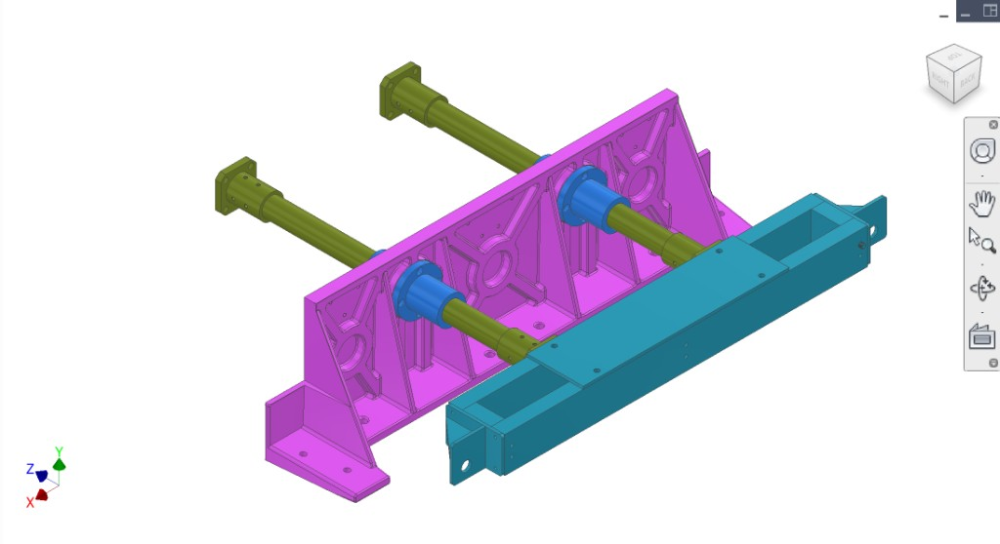
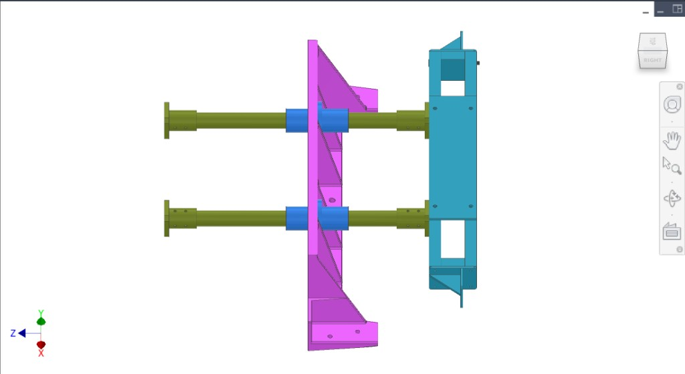
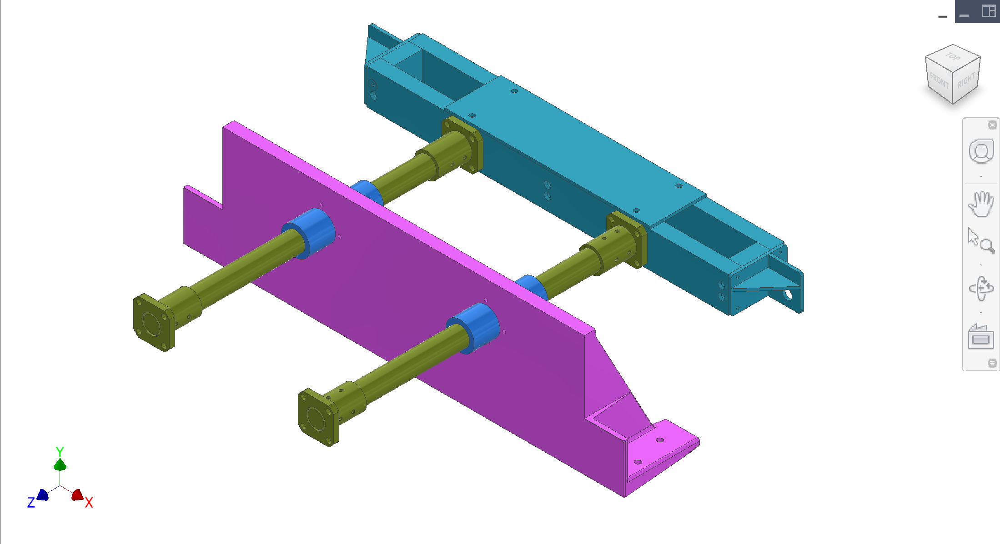
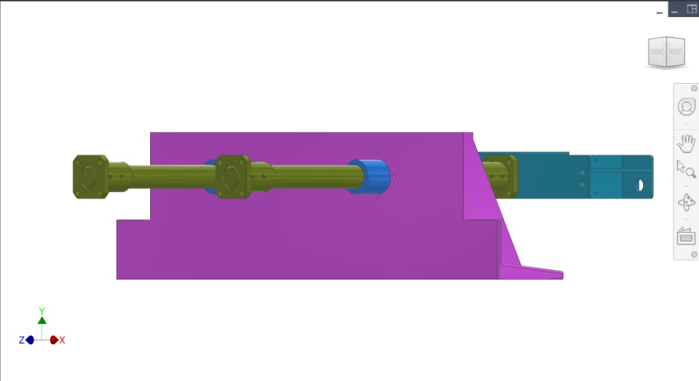
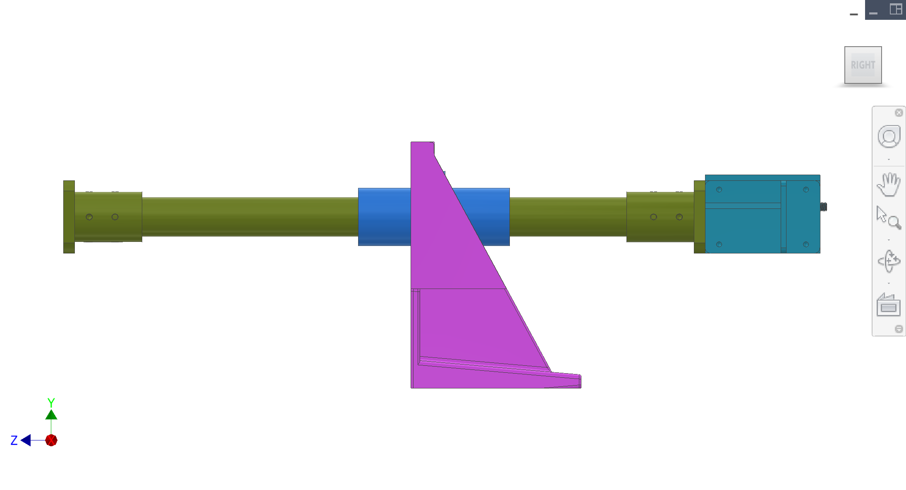
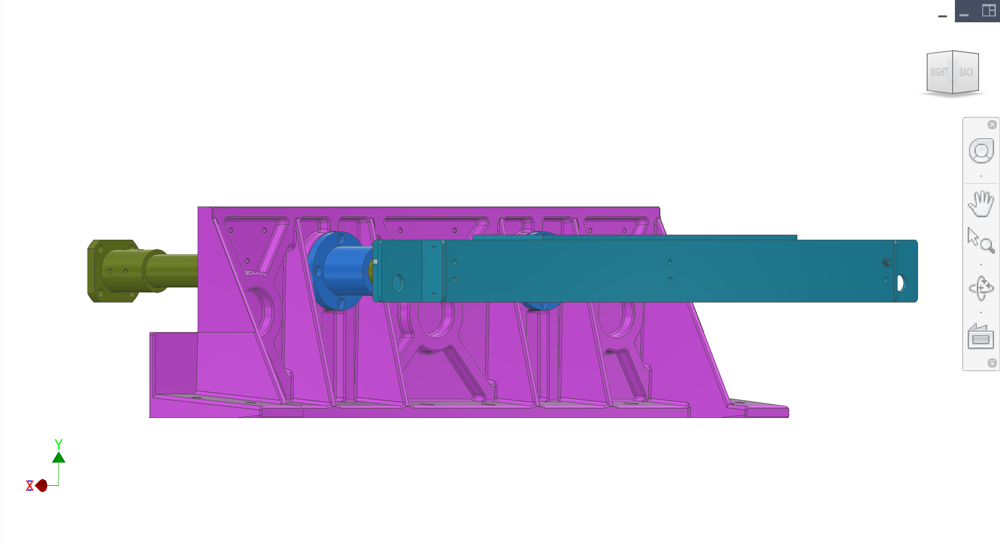
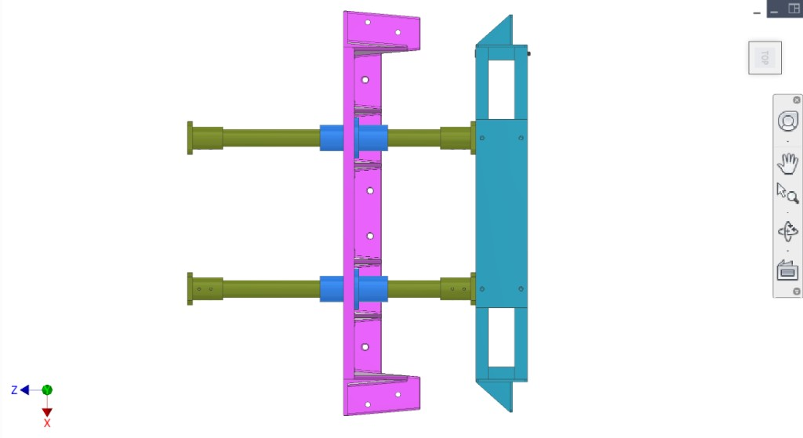

Drive shafts(com conteúdo) — yoke track side/top views, pull bracket + rod stopper, top cap concept (figures).
Introdução
Yoke, two 35 mm drive shafts (with shaft mounts), two LMK35UU linear bearings, transmissão mount plate. Mounts on the main frame. Transmits force from drivetrain to extraction/sync; fruit pressed against collection on loaded mount plate.
Legenda de cores e componentes
Applies to the figures on this página.
Cor(es)
Componente
Yoke — interfaces with drivetrain cam bearings and converts rotation into the extraction stroke.
Two drive shafts (35 mm) — linear guides for the yoke; shaft mounts at both ends set parallelism and stiffness.
Two LMK35UU linear bearings — support low-friction yoke translation on 35 mm shafts; alignment prevents binding.
Placa de montagem da transmissão — mounts to frame; carries shaft mounts and maintains shaft spacing/alignment.
Figuras
Vistas CAD. Consulte as figuras no texto como Figura 1, Figura 2, etc.







Figura 1. Montagem da transmissão: mount plate, yoke, two shafts, two LMK35UU linear bearings.
1 / 7
Discussão
Design preliminar e intenção
Propósito — Convert drivetrain cam-roller motion into a controlled linear stroke while maintaining alignment between extraction and collection descascadores. Transmissão stiffness and repeatability are critical to prevent binding and collisions.
Key elements — Yoke, two 35 mm shafts, flanged/sealed 35 mm linear bearings (LMF/LMK family), and transmissão mount plate. Shaft length is driven by the distance between collection-side descascadores and the required "almost-touch" gap at end of compression stroke (target ~2–3 mm gap between driven and static peeler faces at end-of-stroke).
Maintenance reality — Expect full teardown/reassembly roughly seasonally (≈ yearly). Alignment strategy must support repeatable rebuild without full re-machining.
Problemas e riscos conhecidos
Jam / asymmetric binding case — Worst case is one linear bearing binding or fruit/junk causing asymmetric loading. Shafts can twist and impose large moments into linear bearings and the mount plate; system should survive a high factor-of-safety "rock in juicer" scenario.
Moment amplification — Linear bearings are elevated off the mount plate. Vertical offset creates overturning moments that try to rotate the mount plate; the frame/dowels/bolts must carry these without shifting.
Washdown exposure — Placa de montagem da transmissão front face is exposed to cleaning spray/juice; materials, seals, and scraper/guards matter.
DFM e fabricação (China)
Alignment workflow — Expect an "align → tighten → drill/ream for dowels" workflow similar to frame/drivetrain plates. Contractor should propose the exact datum scheme and repeatable shim strategy.
Two plate architectures — Placa de montagem da transmissão has two candidate designs: (a) sand-cast + post-machined, and (b) welded steel plate + stress relief + machining. Contractor to advise best cost/lead/quality path.
Hygiene surfaces — Any surfaces near pulp/juice should have cleanable finishes and avoid crevices; consider scraper/cover designs for shafts and bearing faces.
Otimizações buscadas
Binding robustness — Maximize tolerance to misalignment and contamination without shaft galling or bearing failure.
Repeatable alignment — Fast seasonal rebuild that returns peeler alignment without extensive re-shimming.
Cleanability — Reduce juice accumulation on shafts/bearings; add scrapers/covers where needed.
Perguntas para o contratado
Define load cases for the transmissão, including an asymmetric/jam case (one side binds) and a "hard object" worst case. Provide force/moment estimates into the mount plate and frame.
Recommend an alignment + dowelization procedure for seasonal teardown/rebuild (what is adjustable, what gets reamed for dowels, and what is shimmed).
Recommend acceptable shaft parallelism and bearing alignment tolerances to prevent binding over service life, and propose inspection checks.
Propose a shaft scraper/cover approach for washdown, including materials compatible with cleaning chemicals and expected wear/maintenance intervals.
Figuras recomendadas (clareza para o contratado)
Adicionar figura: Free-body — yoke + shafts + linear bearings showing jam/asymmetric load case and moment arms into the plate.
Adicionar figura: Datums — sketch of which faces/holes define peeler alignment and which interfaces get doweled after alignment.
Adicionar figura: Scraper concept — sectional sketch of the proposed formed-sheet cover + scraper lip on shaft.
Interfaces
Input: Force from gears (drivetrain) on drivetrain mount plate.
Output: Linear motion of yoke → extraction/synchronisation → fruit pressed against collection system.